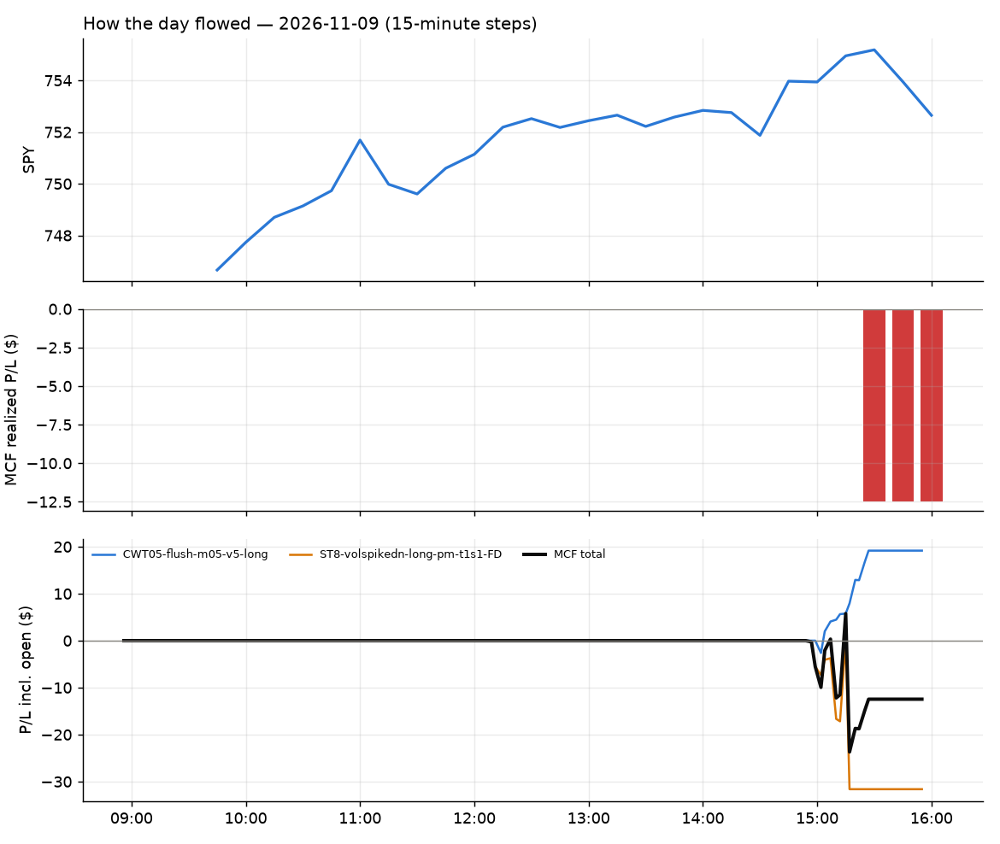
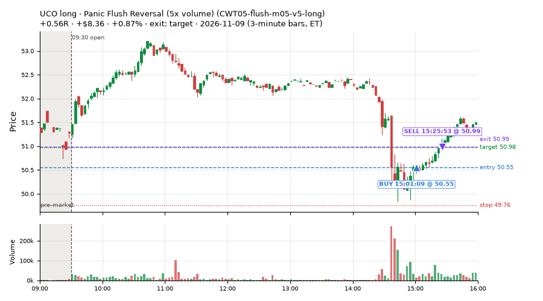
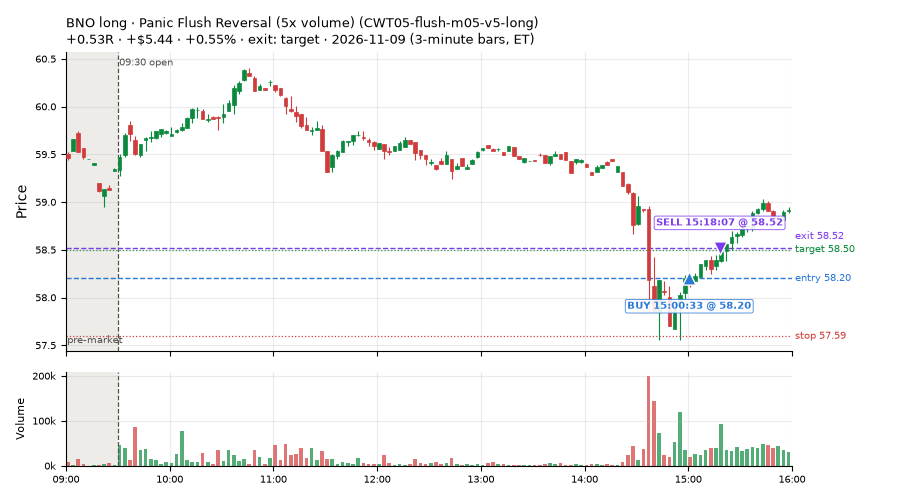
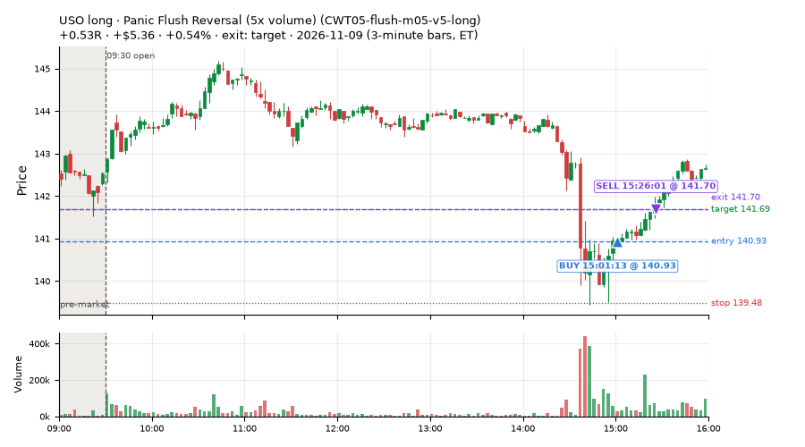
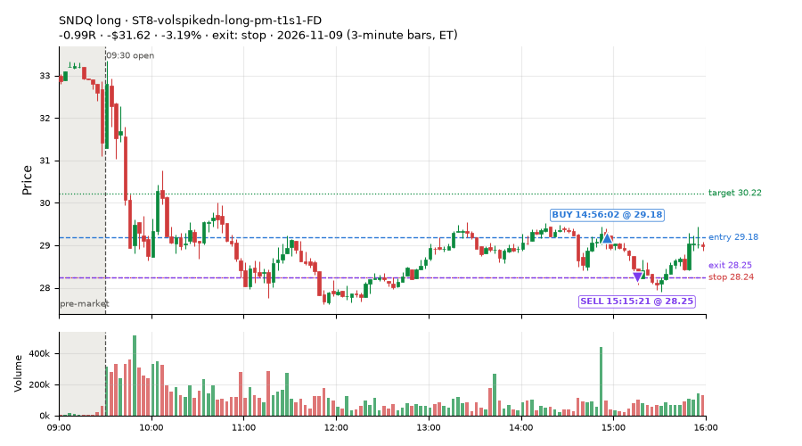

4 trades · win rate 75% · P/L $-12.46
PROBATION: no live setup has passed both locked test periods. 10 owner-directed setups added 2026-10-08 (MarcoFlow top 5 + 5 new), untested live. RW6G1 (RW6 + VWAP band guard) added 2026-10-09, probation.

| Symbol | Setup | Side | In | Out | Entry | Exit | Exit reason | % gained | P/L |
|---|---|---|---|---|---|---|---|---|---|
| UCO | Panic Flush Reversal (5x volume) (CWT05-flush-m05-v5-long) | long | 15:01 | 15:25 | 50.55 | 50.99 | target | +0.87% | $8.36 |
| BNO | Panic Flush Reversal (5x volume) (CWT05-flush-m05-v5-long) | long | 15:00 | 15:18 | 58.20 | 58.52 | target | +0.55% | $5.44 |
| USO | Panic Flush Reversal (5x volume) (CWT05-flush-m05-v5-long) | long | 15:01 | 15:26 | 140.93 | 141.70 | target | +0.54% | $5.36 |
| Symbol | Setup | Side | In | Out | Entry | Exit | Exit reason | % lost | P/L |
|---|---|---|---|---|---|---|---|---|---|
| SNDQ | ST8-volspikedn-long-pm-t1s1-FD | long | 14:56 | 15:15 | 29.18 | 28.25 | stop | -3.19% | $-31.62 |




Signal to fill: median 2s, 90th percentile 4s (4 trades). Bars close each minute; the order follows the bar close.
Best excursion (MFE): median 0.58R; worst (MAE) median 0.15R. 25% of trades never got +0.25R in our favour; 0 reached +1R and still closed at or below 0.
| Symbol | Setup | Best R | Worst R | Closed R |
|---|---|---|---|---|
| SNDQ | ST8-volspikedn-long-pm-t1s1-FD | +0.06 | -1.12 | -0.99 |
| USO | CWT05-flush-m05-v5-long | +0.72 | -0.07 | +0.53 |
| BNO | CWT05-flush-m05-v5-long | +0.58 | -0.15 | +0.53 |
| UCO | CWT05-flush-m05-v5-long | +0.58 | -0.15 | +0.56 |
| Entry time | Trades | Win | Avg R | P/L |
|---|---|---|---|---|
| 14:00-16:00 | 4 | 75% | +0.16 | $-12.46 |
| Setup | Trades | Win | Avg R | Adj R (net of SPY) | Avg R ex-market (all sessions) | P/L |
|---|---|---|---|---|---|---|
| Panic Flush Reversal (5x volume) (CWT05-flush-m05-v5-long) | 3.0 | 100% | +0.54 | +0.40 | +0.24 (beta +2.02, n 5) | $19.16 |
| ST8-volspikedn-long-pm-t1s1-FD | 1.0 | 0% | -0.99 | -1.07 | -0.77 (beta -0.14, n 10) | $-31.62 |
Market direction (SPY, beta 1) accounted for $6.53 of today's $-12.46; the rest ($-18.99) came from the setups themselves. Avg R net of SPY: +0.03 (incl. a hedge leg's cost; report only).
21 setups live today. Today: 17 signals, 4 taken, 0 lost because another setup held the symbol (0%). Since 2026-11-05 (3 sessions): 298 signals, 64 taken, 1 lost to other setups (0%). Peak open positions today 4 of 200 slots. Earnings blackout removed 1439 symbols before scanning.
Simulated playing time (not live): 234 what-if trades of signals not taken, avg -0.14R, 48% winners; of them 1 lost to another setup (avg +0.23R).
Silent: IDX2-spy075-0945-3x-trail, IDX1-qqq100-0955-TQQQ-hold, IDX5-spy050-0945-3x-trail, LD4-st4-breadthup-t1s05-long, LD8-spy-dip030-breadthturn-spxl-holdtr-long, LD3-st2-idxturn-t05s1-long, LD1-ns1-breadthup-t05s1-long
| Prio | Setup | Today sig / taken | Sessions | Signals / taken / trades | Taken/day | Expected/day | Lost to other setups | Lost to (setup n) | Top skip reasons | SIMULATED: not-taken n / avg R / win | Verdict |
|---|---|---|---|---|---|---|---|---|---|---|---|
| 1 | Index Dip Bounce 2 3x S&P IDX2-spy075-0945-3x-trail | 0 / 0 | 3 | 0 / 0 / 0 | 0.00 | – | 0 | – | – | 0 / – | silent no signals in 3 session(s); no expected rate on file |
| 2 | Index Dip Bounce 1 TQQQ (hold) IDX1-qqq100-0955-TQQQ-hold | 0 / 0 | 3 | 0 / 0 / 0 | 0.00 | – | 0 | – | – | 0 / – | silent no signals in 3 session(s); no expected rate on file |
| 3 | Index Dip Bounce 5 3x S&P IDX5-spy050-0945-3x-trail | 0 / 0 | 3 | 0 / 0 / 0 | 0.00 | – | 0 | – | – | 0 / – | silent no signals in 3 session(s); no expected rate on file |
| 4 | * Oversold EMA Cross-Down with Breadth Turning Up (near-miss) LD4-st4-breadthup-t1s05-long | 0 / 0 | 3 | 0 / 0 / 0 | 0.00 | – | 0 | – | – | 0 / – | silent no signals in 3 session(s); no expected rate on file |
| 5 | * SPY Dip of 0.30%, Breadth Turn (SPXL, trailing) (near-miss) LD8-spy-dip030-breadthturn-spxl-holdtr-long | 0 / 0 | 3 | 0 / 0 / 0 | 0.00 | – | 0 | – | – | 0 / – | silent no signals in 3 session(s); no expected rate on file |
| 6 | * Oversold Slope Turn after an SPY Dip-Turn (near-miss) LD3-st2-idxturn-t05s1-long | 0 / 0 | 3 | 0 / 0 / 0 | 0.00 | – | 0 | – | – | 0 / – | silent no signals in 3 session(s); no expected rate on file |
| 7 | * Oversold Pop with Breadth Turning Up (near-miss) LD1-ns1-breadthup-t05s1-long | 0 / 0 | 3 | 0 / 0 / 0 | 0.00 | – | 0 | – | – | 0 / – | silent no signals in 3 session(s); no expected rate on file |
| 8 | Big Gainer Fade with VWAP Band Guard RW6G1-ns2-up3-vwap2sd-short | 0 / 0 | 3 | 0 / 0 / 0 | 0.00 | 0.40 | 0 | – | – | 0 / – | quiet - wait no signals yet; only ~1.2 expected so far |
| 9 | Gap-Down VWAP Loss Short, Slope Filter (near-miss) NM1-cwt09-g10-vwaploss-short | 3 / 0 | 3 | 44 / 1 / 1 | 0.33 | – | 0 | – | not shortable / shorts off 40, spread / quote / size 2, other 1 | 43 / -0.09R / 54% | slow 1.7 entries/week; ~36 weeks to 60 trades |
| 10 | Backside VWAP-Test Short (big runner) CWT04-backside-vwaptest-a25-short | 0 / 0 | 3 | 1 / 0 / 0 | 0.00 | – | 0 | – | not shortable / shorts off 1 | 1 / -1.03R / 0% | slow no entries yet |
| 11 | Monday Weak-RS NS3 Short (near-miss) NM-RWN5-ns3-mon-weakrs-short | 1 / 0 | 3 | 1 / 0 / 0 | 0.00 | – | 0 | – | not shortable / shorts off 1 | 1 / -1.32R / 0% | slow no entries yet |
| 12 | Quiet Downtrend Bounce Short (near-miss) NM-AMS-N1-quiet-morning-short | 0 / 0 | 3 | 2 / 1 / 1 | 0.33 | – | 0 | – | not shortable / shorts off 1 | 1 / -1.02R / 0% | slow 1.7 entries/week; ~36 weeks to 60 trades |
| 13 | Early NS3 Short While SPY Up (near-miss) NM-RWN3-ns3-spyup-early-short | 0 / 0 | 3 | 11 / 6 / 6 | 2.00 | – | 0 | – | spread / quote / size 4, other 1 | 5 / +0.97R / 100% | slow 10.0 entries/week; ~6 weeks to 60 trades |
| 14 | ST8-volspikedn-long-pm-t1s1-FD ST8-volspikedn-long-pm-t1s1-FD | 1 / 1 | 3 | 16 / 10 / 10 | 3.33 | 1.05 | 1 | MF2-open-rsimidhi-flowsell 1 | spread / quote / size 3, other 2, symbol held by another setup 1 | 6 / -0.04R / 67% | ok 16.7 entries/week |
| 15 | RSI Collapse Dip Buy, Nasdaq-below-VWAP only (all day) ST7Q-rsi50dn-qqqbelowvwap-long-t1s1-FD | 0 / 0 | 3 | 6 / 3 / 3 | 1.00 | – | 0 | – | spread / quote / size 2, other 1 | 3 / -0.40R / 33% | slow 5.0 entries/week; ~12 weeks to 60 trades |
| 16 | Early Sellers, Mid-High RSI MF2-open-rsimidhi-flowsell | 1 / 0 | 3 | 40 / 11 / 11 | 3.67 | 1.30 | 0 | – | per-setup cap 19, spread / quote / size 7, other 2 | 29 / -0.78R / 10% | ok 18.3 entries/week |
| 17 | Gap-Down Bounce Rejection Short (10% gap) CWT09-gapdn-bounce-g10-lowerhalf-short | 7 / 0 | 3 | 48 / 2 / 2 | 0.67 | – | 0 | – | not shortable / shorts off 45, spread / quote / size 1 | 46 / +0.04R / 70% | slow 3.3 entries/week; ~18 weeks to 60 trades |
| 18 | NS2 Up-3 Short, QQQ Up, Slope Down (near-miss) NM-RWR4-ns2-up3-qqqup-slopedn-short | 0 / 0 | 3 | 2 / 2 / 2 | 0.67 | – | 0 | – | – | 0 / – | slow 3.3 entries/week; ~18 weeks to 60 trades |
| 19 | Backside Lower-High Short CWT04-backside-lh-a15-short | 0 / 0 | 3 | 4 / 0 / 0 | 0.00 | – | 0 | – | not shortable / shorts off 4 | 4 / +0.55R / 50% | slow no entries yet |
| 20 | Panic Flush Reversal (5x volume) CWT05-flush-m05-v5-long | 4 / 3 | 3 | 8 / 5 / 5 | 1.67 | – | 0 | – | spread / quote / size 3 | 3 / +0.57R / 100% | slow 8.3 entries/week; ~7 weeks to 60 trades |
| 21 | Stretched Below VWAP Bounce (far) CWT13-vwapstretch-z075-long | 0 / 0 | 3 | 115 / 23 / 23 | 7.67 | – | 0 | – | per-setup cap 67, spread / quote / size 15, other 10 | 92 / -0.13R / 42% | ok 38.3 entries/week |
Every trade is attached as a CSV you can open and edit in Excel or Google Sheets. Live page: https://misiti15.github.io/MCF/live/